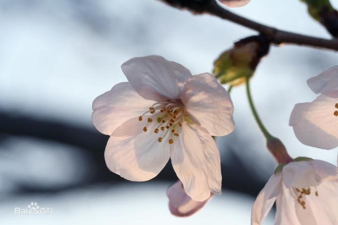
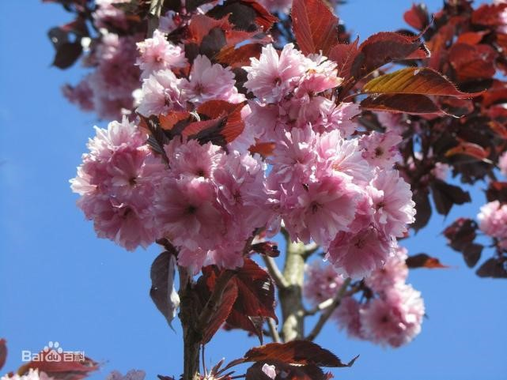
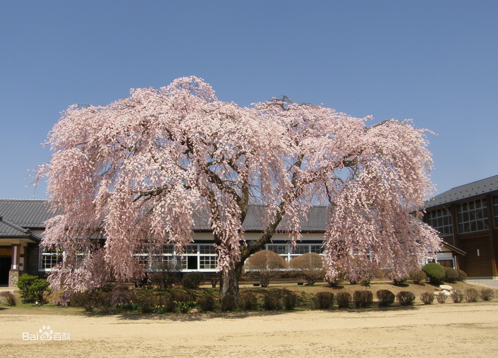
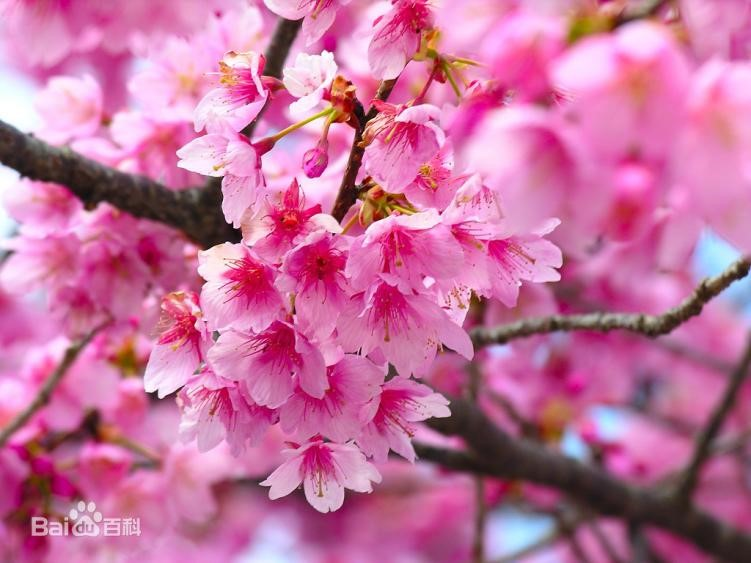
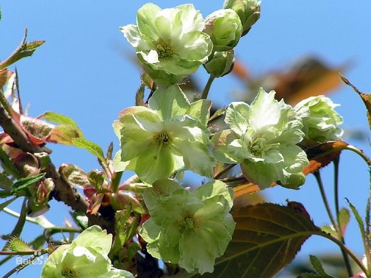
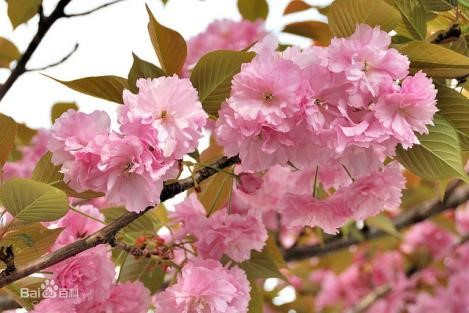
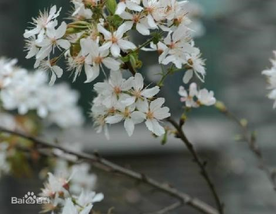
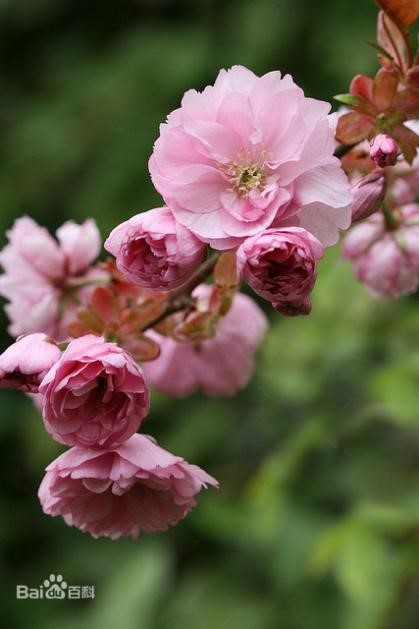
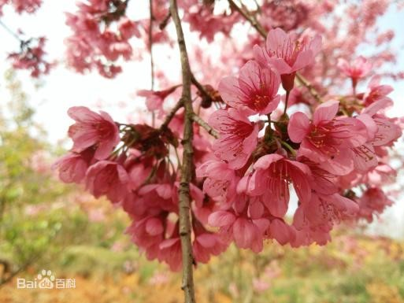

樱花园
樱花湖景区水面面积为28014平方米，蓄水量为13万立方米，水深分为两级，近大坝处最高水深9米以上，近石滩雾境处水深约1.5米。共垒置驳岸景石2590吨，修筑游道820米、仿木栈桥180米、石滩雾境景观443平方米和配套观景半岛、平台等景观设施。樱花湖改造后与周边专类园相映成趣，构成了植物园最美和最有特色的核心景区和标致性景观。

染井吉野樱
染井吉野樱，又名东京樱花、日本樱花、樱花，为蔷薇科李属樱亚属的植物，盛开花颜色多为半透明浅粉色。
染井吉野樱是一种高度约5至12米的落叶树。花朵有五枚花瓣，花色在花朵刚绽放时是淡红色，而在完全绽放时会逐渐转白。染井吉野樱花期3月中下旬，花先叶开放。喜欢温暖湿润的气候环境。对土壤的要求不严，以深厚肥沃的砂质壤土生长最好，根系较浅，不耐盐碱土。忌积水低洼地。有一定的耐寒和耐旱力，但对烟尘和大风的抵抗能力较弱。

红叶樱
红叶樱花是蔷薇科、樱属、山樱花下的一个品种。红叶樱花为落叶乔木，树皮暗栗褐色，光滑而有光泽，具横纹，小枝无毛，通常树高可达5-8米，树冠直径4-6米。叶卵形及卵状椭圆形，叶片有自然光泽；叶呈盾形，边缘有锯齿，互生于枝条上，叶脉清晰，质感较好；叶三季紫红，初春展叶为深红色，5-7月叶为亮红色，高温多雨季节老叶渐变为深紫色，叶大而厚，晚秋下霜季节叶变桔红色。其花甚大、粉红色、重瓣、有长梗，伞房状或总状花序，在中国贵阳花期为4月中旬，花叶同放，花大而艳丽。

垂枝樱
垂枝樱花粗枝横向伸展，小枝长而下垂，淡紫褐色，无毛，嫩枝绿色，被疏柔毛。冬芽卵圆形，无毛。叶片椭圆卵形或倒卵形，上面深绿色，无毛，下面淡绿色，沿脉被稀疏柔毛。花序伞形总状，总梗极短，有花3-4朵，先叶开放，花直径3-3.5厘米；花瓣白色或粉红色，椭圆卵形，先端下凹，全缘二裂；雄蕊约32枚，短于花瓣；花柱基部有疏柔毛。核果近球形，直径0.7-1厘米，黑色，核表面略具棱纹。花期4月，果期5月。

云南樱
云南早樱原产云南。花期2月底至3月上旬。先花后叶，花深红色，花瓣约25枚，花径2.5厘米左右，花呈半开状态，下垂，萼片红色。嫩叶茶褐色。花期2～3月。

御衣黄樱
御衣黄樱，花朵大小为中朵，开着绿色花朵的珍稀樱花。
御衣黄樱是一种重瓣樱花，呈淡绿色，花的直径3.5至4.5厘米，花瓣有12至14个，花瓣中心有绿色的线条，盛开后，绿色的线会逐渐变为红色，花落的时候整个花瓣都带有红色。
御衣黄樱的花期比染井吉野樱要晚，一般在4月中旬到下旬开花。

关山樱
关山樱，俗称“红缨”。八重樱的一个代表性品种，花期3月底或4月初，花叶同开。与怨厣秸较为相似，花浓红色，花茎6厘米左右，瓣约30枚，2枚雌蕊叶化，因此不能结实，花梗粗且长，嫩叶茶褐色。小枝多而向上弯。小乔木，平均高度2.5m，多分枝，开花数量多。秋叶橙黄可比银杏，非常美丽。孤植、群植均可，也可作为行道树栽植。

八重红大岛
八重红大岛是重瓣化及淡红色的栽培品种，遗传了大岛樱的基因，长势快，可以作为乔木。八重红大岛幼叶绿褐色、花叶同放，总状花序花径4厘米以上，萼筒漏斗状钟形，萼片长三角形，边缘有锯齿，花瓣有20-30枚，花淡红色。花期比染井吉野樱稍晚。
普贤像
蔷薇科樱桃属，重瓣樱花品种。花期3月下旬或4月初，花叶同开。与怨厣秸较为相似，普贤象樱花的花苞初开时是粉红色的，但等到全开时会变成粉白色，花梗弯曲下垂。重瓣樱花以普贤象樱花的花期最晚，四月中旬才进入盛开时期，它的花瓣数量最多，达到20～50枚之多。花芯伸出2片由雌蕊叶化而成的绿叶。由于化叶过的雌蕊，像普贤菩萨所骑的象，亦突出两支象牙，故起名普贤象樱花。

尾叶樱
乔木或灌木，高5-10米。小枝灰褐色，无毛，嫩枝无毛或密被褐色长柔毛。冬芽卵圆形，无毛。叶片长椭圆形或倒卵状长椭圆形，上面暗绿色，无毛，下面淡绿色，中脉和侧脉密被开展柔毛，其余被疏柔毛。花序伞形或近伞形，有花3-6朵，先叶开放或近先叶开放；花瓣白色或粉红色，卵圆形，先端2裂；雄蕊32-36，与花瓣近等长，花柱比雄蕊稍短或较长，无毛。核果红色，近球形，核卵形表面较光滑。花期3-4月。

山樱
山樱又称东北山樱、本溪山樱，分布在辽宁本溪、风城、宽甸，吉林吉安、通化等地，是甜樱桃嫁接常用的优良砧木，其优点是种子发芽率高，生长健壮，根系发达，固地性强，嫁接成活率可高达95%以上，抗寒性强，较抗根瘤病。
